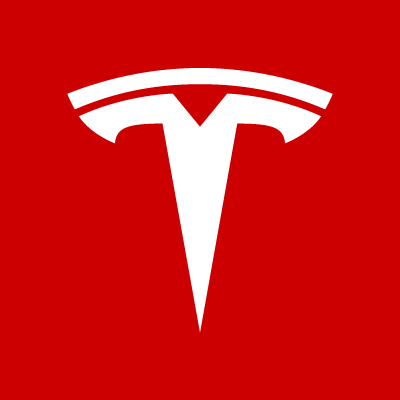

Elon Musk
Elon Musk is an innovator who has started multiple companies such as X.com which ended up becoming Paypal and others, however his most prominent companies are the big two, Tesla Motors Inc. and SpaceX.


Less well known are his two of his most recent startups OpenAI, a non-profit artificial intelligence (AI) research company, and Neuralink, a nanotechnology company that aims to integrate the human brain with artificial intelligence. OpenAI aims to develop artificial general intelligence (AGI) in a way that is safe and beneficial to humanity, while Neuralink focuses on allowing human brains to directly interface with computers.
I look up too Elon Musk, because he has goals to change humanity and society in a way that I see as positive, and is also acting on these goals. He sees the change he wants and works towards bringing it into fruition. He has also started to pivot towards artificial intelligence and extending human lifetime in recent years which is something I would want more people to dedicate themselves towards.